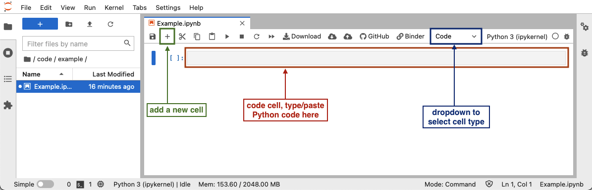

Summary and Setup
This lesson shows how to use Python and scikit-image to do basic image processing.
Prerequisites
This lesson assumes you have a working knowledge of Python and some previous exposure to the Bash shell. These requirements can be fulfilled by: a) completing a Software Carpentry Python workshop or b) completing a Data Carpentry Ecology workshop (with Python) and a Data Carpentry Genomics workshop or c) independent exposure to both Python and the Bash shell.
If you’re unsure whether you have enough experience to participate in this workshop, please read over this detailed list, which gives all of the functions, operators, and other concepts you will need to be familiar with.
Before following the lesson, please make sure you have the software and data required.
Before joining the workshop or following the lesson, please complete the data and software setup described in this page.
Data
The example images used in this lesson are available on FigShare. To download the data, please
visit the
dataset page for this workshop and click the “Download all” button.
Unzip the downloaded file, and save the contents as a folder called
data somewhere you will easily find it again, e.g. your
Desktop or a folder you have created for using in this workshop. (The
name data is optional but recommended, as this is the name
we will use to refer to the folder throughout the lesson.)
Software
-
Download and install the latest Anaconda distribution for your operating system. Make sure to choose the Python 3 version (as opposed to the one with Python 2). If you wish to use an existing installation, be sure to upgrade your scikit-image to at least 0.19. You can upgrade to the latest scikit-image using the shell command that follows.
-
This lesson uses Matplotlib features to display images, and some interactive features will be valuable. To enable the interactive tools in JupyterLab, the
ipymplpackage is required. The package can be installed with the commandconda install -c conda-forge ipymplOlder JupyterLab versions
If you are using an older version of JupyterLab, you may also need to install the labextensions manually, as explained in the README file for the
ipymplpackage. -
Open a Jupyter notebook:
Open a terminal and type
jupyter lab.Launch the Anaconda Prompt program and type
jupyter lab. (Running this command on the standard Command Prompt will return an error:'conda' is not recognized as an internal or external command, operable program or batch file.)After Jupyter Lab has launched, click the “Python 3” button under “Notebook” in the launcher window, or use the “File” menu, to open a new Python 3 notebook.
-
To test your environment, run the following lines in a cell of the notebook:
PYTHON
import imageio.v3 as iio from skimage import transform import matplotlib.pyplot as plt %matplotlib widget # load an image image = iio.imread(uri='data/colonies-01.tif') # rotate it by 45 degrees rotated = transform.rotate(image=image, angle=45) # display the original image and its rotated version side by side fig, ax = plt.subplots(1, 2) ax[0].imshow(image) ax[1].imshow(rotated)Upon execution of the cell, a figure with two images should be displayed in an interactive widget. When hovering over the images with the mouse pointer, the pixel coordinates and colour values are displayed below the image.
 To run Python code in a Jupyter notebook cell, click on a cell in the notebook (or add a new one by clicking the
+button in the toolbar), make sure that the cell type is set to “Code” (check the dropdown in the toolbar), and add the Python code in that cell. After you have added the code, you can run the cell by selecting “Run” -> “Run selected cell” in the top menu, or pressing Shift+Enter.